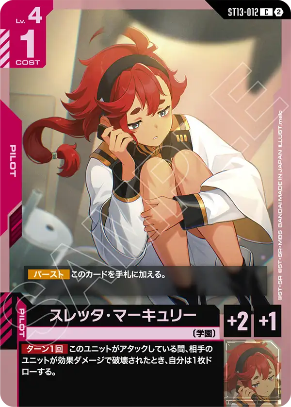
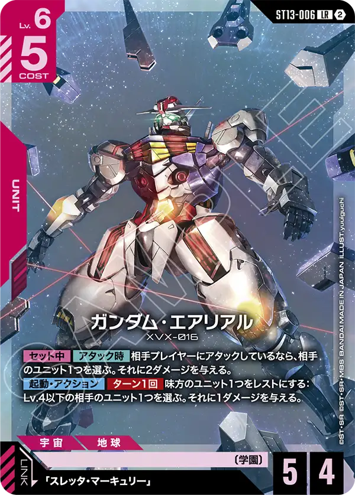
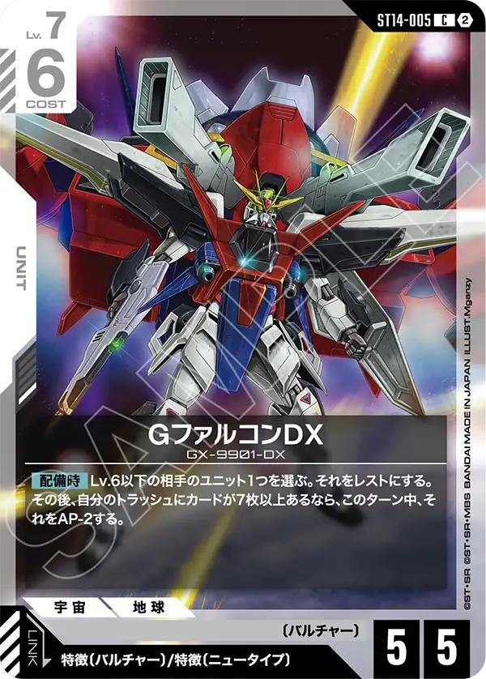

シリアルカードチャレンジ 10月のうち10/1〜10/13に開催された221大会で、上位4位に入った1,080デッキから作った。比べたのは1,805組。前の期間は9/19〜9/27（227大会・上位4位1,065デッキ）で、矢印と増減はこの期間との比較になる。
相性表
| 自分 ＼ 相手 | 赤/白 | 青/紫 | 緑/紫 | 青/白 | 青/緑 |
|---|---|---|---|---|---|
| 赤/白 | — | △ 50.5% （196組） | ◎ 57.5% （212組） | △ 52.0% （179組） | △ 48.1% （160組） |
| 青/紫 | △ 49.5% （196組） | — | ◎ 58.7% （126組） | ○ 55.7% （149組） | △ 51.5% （103組） |
| 緑/紫 | × 42.5% （212組） | × 41.3% （126組） | — | △ 48.2% （114組） | － （87組） |
| 青/白 | △ 48.0% （179組） | ▲ 44.3% （149組） | △ 51.8% （114組） | — | － （80組） |
| 青/緑 | △ 51.9% （160組） | △ 48.5% （103組） | － （87組） | － （80組） | — |
◎ 57.5%以上 ○ 52.5%超〜57.5%未満 △ 47.5%〜52.5% ▲ 42.5%超〜47.5%未満 × 42.5%以下 － 100組未満
赤/緑（135組）は、ほかのどのデッキカラーとも100組に届かないので表から外した。表以外には比較数が7位以下で表に載せなかったデッキカラーは、青/赤（129組）、緑/白（86組）、赤/紫（62組）だ。
デッキカラーごとの採用カード
矢印は前の期間（9/19〜9/27）からの割合の差で、↑ +5pt以上、↗ +2pt以上+5pt未満、→ −2pt超+2pt未満、↘ −5pt超−2pt以下、↓ −5pt以下。採用率は、そのデッキカラーで上位4位に入ったデッキのうちそのカードを1枚以上入れた割合。急上昇は、両方の期間で30デッキ以上あるデッキカラーで、採用率が10pt以上上がったカードのうちいちばん上がった1枚。新弾（ST11〜ST14・9/26発売）のカードは急上昇に含めず、別に「新弾」として採用率15%以上の上位2枚を出した。
赤/白 ↑ 上位4位 219 → 286 デッキ（割合 20.6% → 26.5%、+5.9pt）




赤白急上昇のGreDは低HPのユニットを複数展開することが多いアグロデッキへの対策カード
単体へのバーンダメージは複数あるが、全体ダメージが必要な場面が増えたので採用率が上がったと思われる
青/紫 ↘ 上位4位 208 → 185 デッキ（割合 19.5% → 17.1%、−2.4pt）


青紫はアムロを採用したアグロ型の登場によってレベル2のAP2ユニットの採用が必要と言う形でガンダムエクシアリペアの採用が伸びた
新弾のマリーダをパイロットの2種目に据えることで青と紫のバンシィの効果コストに必要なトラッシュを増やす目的もエクシアには求められる
従来の形から比較的大きめの構築変更だったこともあり入賞率は下がったが、今後構築の最適化が進めば勝率は戻る可能性も秘めている
緑/紫 ↗ 上位4位 148 → 174 デッキ（割合 13.9% → 16.1%、+2.2pt）


緑紫はアグロによった形から少しミッドレンジに寄せる形に変異を見せた印象
急上昇したグシオンもその影響だろう。新弾からはキュベレイとハマーンの採用が目立った
トークンを使って盤面を削る事ができる点は非常に協力だが、そこまでの導線をどのように作るかは今後の課題となるだろう
青/白 ↓ 上位4位 250 → 181 デッキ（割合 23.5% → 16.8%、−6.7pt）



青白の急上昇はソードストライクと言うことでキラを合計8枚採用と言うキラのリンク条件を持つカードたちには十分すぎるリンク設計を持つデッキでは十分採用を検討できるカードでは合ったが、アグロが比較的少なめの環境だったこともあり採用されていなかった
しかし、新しいアグロ型青紫や事前評価の高いカプルの対応策として採用が増えたと考えられる
新カードはGファルコンDX、リンク条件はニュータイプが含まれることで緩い条件だが、青白ではアムロを主に利用しない限りリンクはできないだろう
ただし、配備時効果は非常に強力な物でレスト+条件月AP-2と言うことで盤面の処理が非常に容易になるためそれが理由で採用が増えたのだろう
青/緑 → 上位4位 139 → 141 デッキ（割合 13.1% → 13.1%、±0.0pt）


青緑に関しては新弾のカード採用が大きく増えたことはなかったが急上昇のカードに専守防衛が採用される形になった
青白でも記載したカプルの事前評価が非常に高かった影響があるだろう。また形を変えた青紫にも刺さる形となり低レベル低コストで盤面を一時的に止める事ができるのは青緑にとっては自分より早いデッキを対策するうえでは十分な物だろう
また、一部デッキではHP6のベースを採用せず、バーンを与えるカードやAPパンプカードを採用するHP5のベースの採用が増えたため今後多少ではあるが勝率も改善してく可能性はあると思われる
もっと詳しく見る
大会ごとの結果やデッキタイプの割合は、シリアルカードチャレンジ 10月の環境分析で見られる。
表の読み方
同じ大会で上位4位に入った2つのデッキの順位を比べ、上の順位を勝ちと数えた。直接対戦の結果ではない。
同じデッキカラーどうしの組と、同じ順位の組は数えていない。結果が16件以上ある大会（64名規模）は、公式の順位どおり各順位2名として比べた。
※数字は当サイトが公式の大会結果から自動で集めたデータの集計。誤りに気づいたらXアカウント（@gcg_stats）のDMへ。